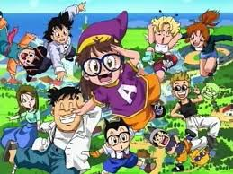
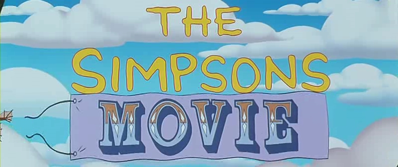

- #Song_Coding
- #Song_Tube
- #Oh_Yeah
‘썸타’, ‘돌아오지마’, 그리고 선공개곡 ’Shut Up & Groove’까지 쉴틈없이 싱글을 쏟아낸
헤이즈가 미니 앨범 ‘And July’를 가지고 돌아왔다.
여느 때와 같이 전 앨범의 작사와 작곡에 주도적으로 참여하며 앨범에 애정을 쏟았고,
그 어느 때보다도 프로듀싱에 적극적으로 참여했다.
헤이즈가 가진 감성의 17% 정도가 드러나는 앨범으로,
기존에 보여준 7%에 비해 헤이즈의 색이 확실히 더 짙고 선명해졌다.
10M view 1 month ago

Song_Tube
1M subscribers
-
처음에는 노리마키 센베를 주인공으로 매회 발명품이 실패하는 모습을 그린다는 스토리였지만 토리시마의 권유에 의해 아라레를 주인공으로 바꾸게 되었다. 이 시점에서 이미 4회분이 완성되어있었기 때문에 4회까지는 센베, 5회 이후부터가 아라레가 주인공이 되었다. 당초 토리야마는 이에 대해 거부감이 있었지만 이후에 "토리시마씨가 옳았다."고 인정하고 있다. Song_Tube 3K views
-
 1999년 5월 1일 키즈 초이스 어워드에서 처음으로 방영한 바닷속의 도시인 비키니 시티(Bikini Bottom)에서 벌어지는 이야기를 다룬 시트콤 형식의 코미디 애니메이션. 타임지 선정 '최고의 애니메이션'이며, 니켈로디언 키즈 초이스 어워드 최우수 애니메이션 부분 15회 최다 수상작이자 자타공인 니켈로디언의 최고 전성기를 이끈 애니메이션이다. 매일 전 세계 2천7백만 명이 시청했다고 하며[7], 초창기 포켓몬스터의 광풍을 시청률에서 잡아버린 작품도 이것이다. Song_Tube 3K views
1999년 5월 1일 키즈 초이스 어워드에서 처음으로 방영한 바닷속의 도시인 비키니 시티(Bikini Bottom)에서 벌어지는 이야기를 다룬 시트콤 형식의 코미디 애니메이션. 타임지 선정 '최고의 애니메이션'이며, 니켈로디언 키즈 초이스 어워드 최우수 애니메이션 부분 15회 최다 수상작이자 자타공인 니켈로디언의 최고 전성기를 이끈 애니메이션이다. 매일 전 세계 2천7백만 명이 시청했다고 하며[7], 초창기 포켓몬스터의 광풍을 시청률에서 잡아버린 작품도 이것이다. Song_Tube 3K views -

미국의 방송사 FOX에서 방영중인 미국 애니메이션. 미국의 방송 역사 중 시트콤 및 애니메이션 부분에서는 최장수 프로그램이다. 미국 애니메이션의 역사에 있어서는 현대기의 대표적 애니메이션들 중 하나로 꼽힌다. 2020년에 32기가 방영이 확정되면서 30년에 이르는 방영 연수에 접어들고 있다.[4] 타임지는 1999년 12월 31일, 20세기 최고의 TV 시리즈물로 선정하였으며, 2005년 영국 지상파 TV 채널인 채널 4에서 선정한 가장 위대한 미국 애니메이션 100선에서 당당히 1위에 오른 적이 있다. Song_Tube 3K views